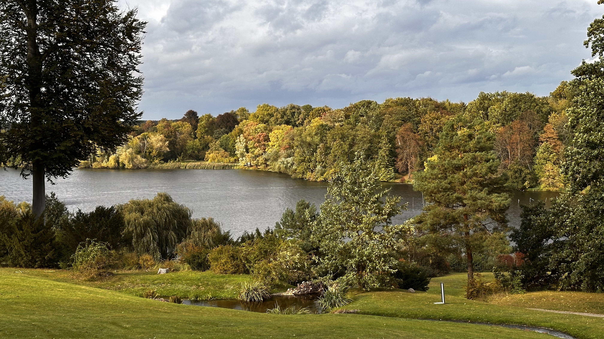
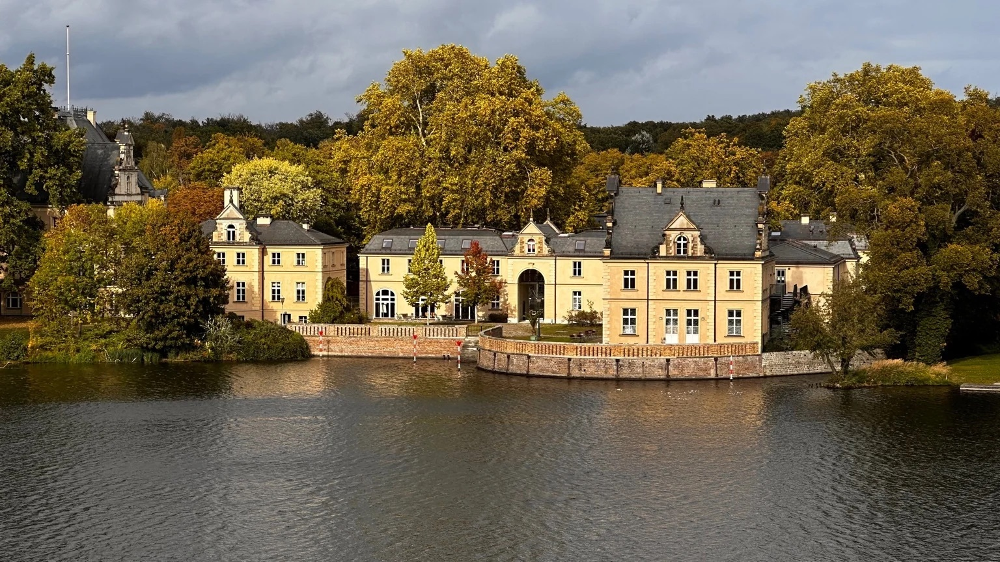
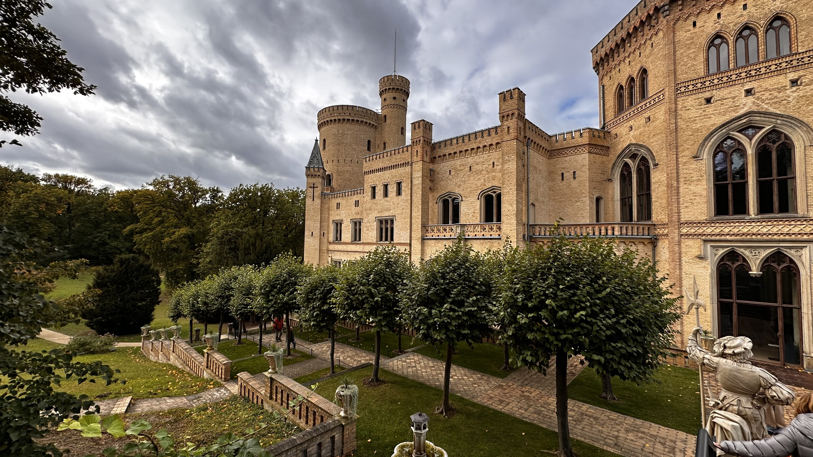
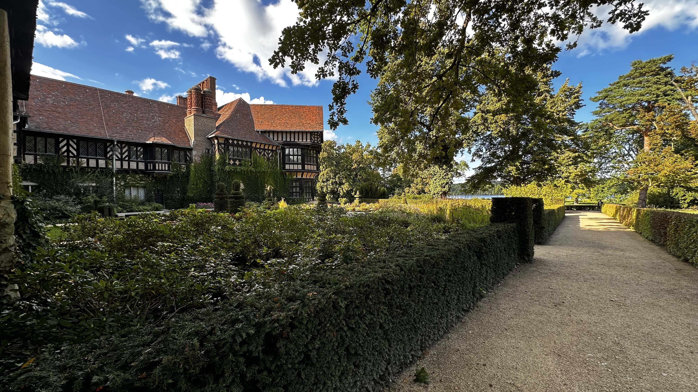
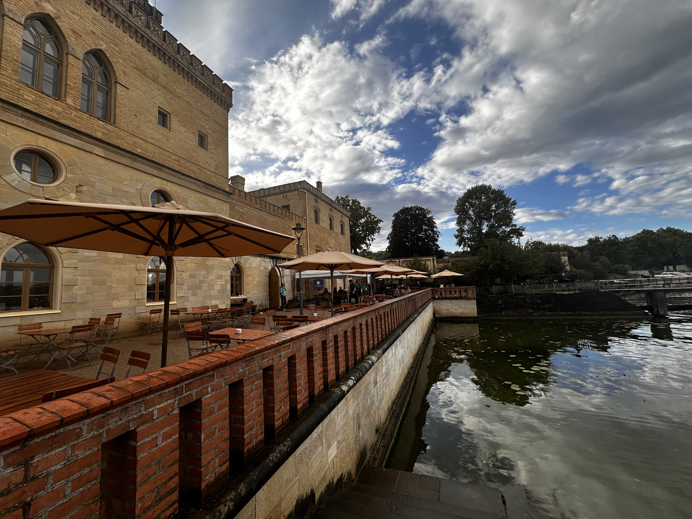
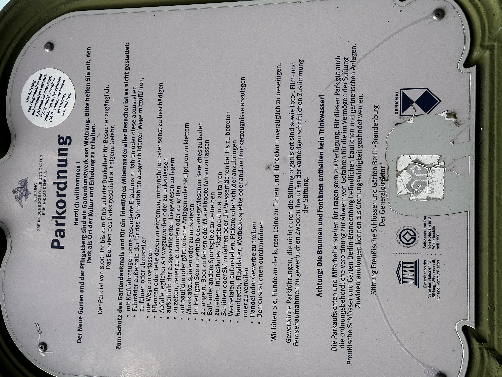
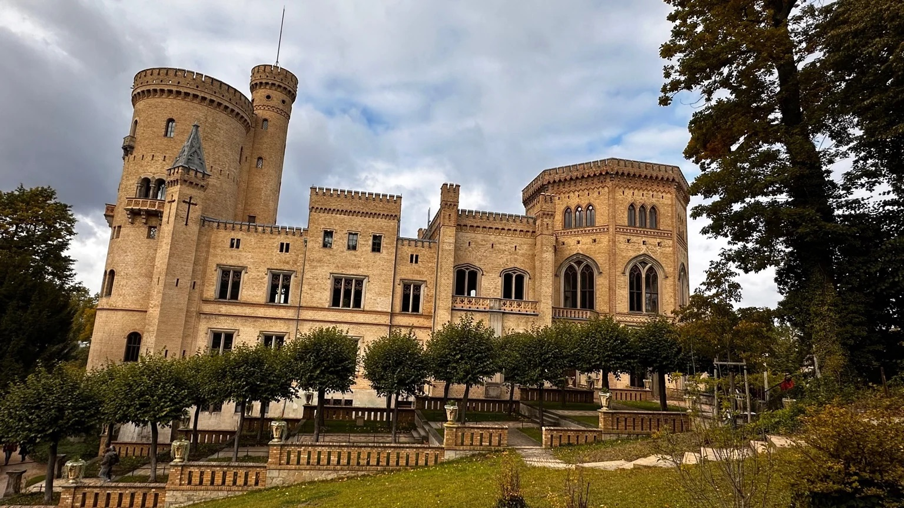
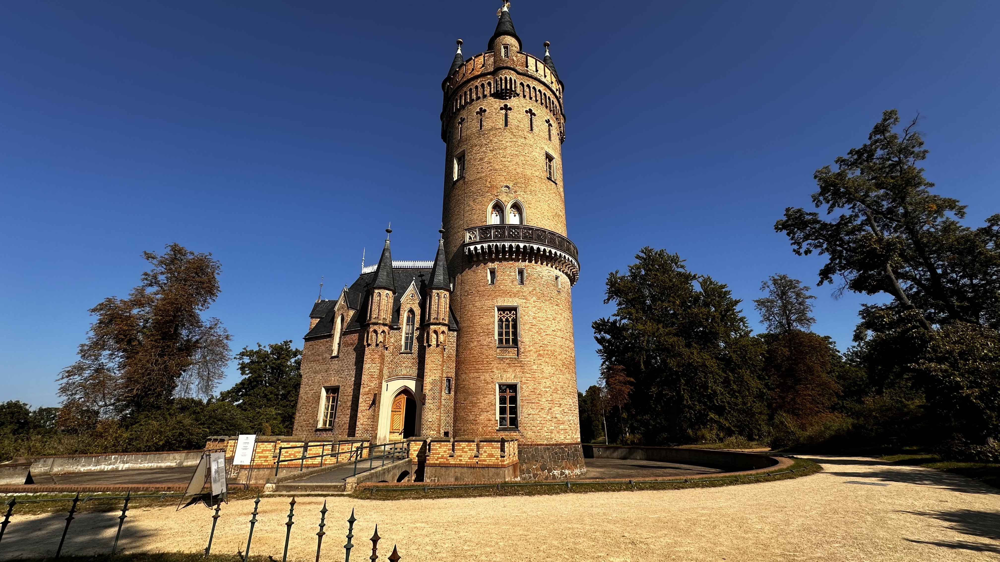
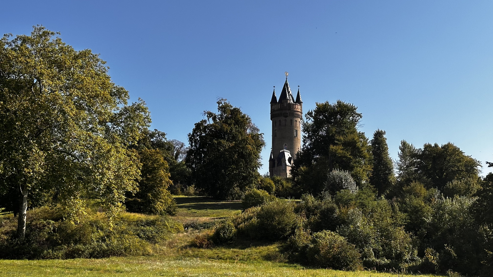
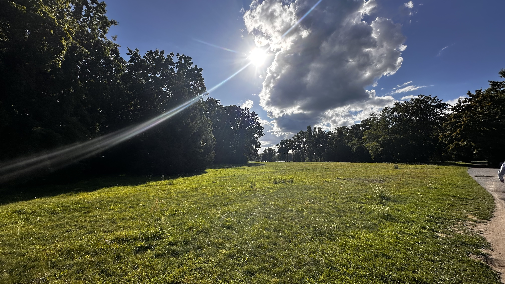

Areal 1
Park Babelsberg
Der 124 Hektar große englische Landschaftspark am Ufer der Havel ist ein Meisterwerk der Gartenkunst. Seit 1990 UNESCO-Welterbe.
Kartenansicht
Entdecken Sie die UNESCO-Welterbe-Parks und Kulturdenkmäler am Ufer der Havel. Mit praktischen Informationen zu Örtlichkeiten, Anfahrt und aktuellen Gegebenheiten vor Ort.
Von der historischen Parkanlage bis zum königlichen Schloss – entdecke die verbundenen UNESCO-Welterbe-Areale am Ufer der Havel.

Der 124 Hektar große englische Landschaftspark am Ufer der Havel ist ein Meisterwerk der Gartenkunst. Seit 1990 UNESCO-Welterbe.
Kartenansicht
Das neugotische Sommerschloss von Kaiser Wilhelm I. thront majestätisch über der Havel. Erbaut 1833-1849 nach Entwürfen von Karl Friedrich Schinkel.
Kartenansicht
Ein frühes Meisterwerk der Landschaftsgestaltung am Heiligen See. Angelegt ab 1787 für Friedrich Wilhelm II. Hier fand 1945 die Potsdamer Konferenz statt.
KartenansichtDer südlichste Teil der UNESCO-Welterbe-Landschaft an der Glienicker Brücke. Ein verstecktes Juwel mit italienisch inspirierter Architektur.
KartenansichtFinde schnell was du suchst – von Sehenswürdigkeiten bis zu praktischen Services.

8 historische Orte
Neugotische Schlösser, Aussichtstürme und historische Bauwerke aus verschiedenen Epochen.
Alle ansehen
303 Locations
Restaurants, Cafés, Imbisse und Biergärten in Fußnähe zum Park.
Alle ansehen
WC, Parking, ÖPNV
Toiletten, Parkplätze und öffentliche Verkehrsmittel mit Live-Daten.
Alle ansehen
Spazierwege & Wiesen
Malerische Uferwege, Liegewiesen und Naturerlebnisse im Park.
Entdecken
1200+ Parkplätze
Alle Infos zu Anfahrt, Parkplätzen und öffentlichen Verkehrsmitteln.
Mehr erfahren
Parkordnung
Was ist erlaubt? Radfahren, Picknicken, Baden und mehr.
Vergleich ansehenEntdecke die historischen Bauwerke und landschaftlichen Highlights im UNESCO-Welterbe Park Babelsberg.

Neugotisches Sommerschloss von Kaiser Wilhelm I. Erbaut 1833-1849 von Schinkel, Persius und Strack. UNESCO-Welterbe seit 1990.
Mehr erfahren
46m hoher Aussichtsturm mit 360°-Panorama über Potsdam. Erbaut 1853-1856. Geöffnet Mai–Oktober, Sa/So 10-17:30 Uhr.
Mehr erfahrenMalerischer Spazierweg mit freiem Panoramablick über den Tiefen See. Perfekt zum Entspannen, Fotografieren und Sonnenuntergang genießen.
Mehr erfahren
Historisches Bootshaus am Havelufer aus dem 19. Jahrhundert. Heute Event-Location mit romantischem Blick aufs Wasser.
Mehr erfahrenEntdecke die Potsdamer Parks aus sechs einzigartigen Perspektiven: Von der Landschaftsfotografie über Geocaching und Sport bis zur Spurensuche im Kalten Krieg. Detaillierte Guides mit Personas, Community-Geschichten und professionellem Know-how – die Parks als lebendige Bühnen für zeitgenössische Praktiken.
Professioneller Foto-Guide mit besten Spots, Licht-Timing-Analyse und Kompositions-Tipps. Lennés Sichtachsen fotografisch interpretieren, rechtliche Rahmenbedingungen der SPSG, Equipment-Empfehlungen (Teleobjektive für Kompression), HDR-Techniken und Schwarz-Weiß-Fotografie.
Zum Foto-Guide
Digitale Schatzsuche im UNESCO-Welterbe: Multi-Caches (Park Babelsberg 01/02 mit 8 Stationen), Mystery-Caches an der Glienicker Brücke, Adventure Labs. SPSG-Regeln, Muggel-Warnungen, Community-Tipps und GPX-Downloads für Navigation.
Zum Geocaching-GuideKuratierte Laufrouten mit präzisen Distanzen, Höhenprofilen und GPX-Downloads. Park Babelsberg: Hügelige 4,5-7,7 km Strecken (120m Höhenmeter). Neuer Garten: Flache 4 km Runde. Beste Zeiten, Untergrund-Infos, Trainingstipps für Intervall- und Tempoläufe.
Zum Lauf-Guide
Spirituelle Kraftorte für Outdoor-Yoga und Achtsamkeits-Spaziergänge. Ruhige Wiesen abseits der Hauptwege, praktische Tipps für Praxis im Freien (Unterlage, Kleidung), "Bewegte Meditation" (wöchentlich Freitag 8:30), Lennés Sichtachsen als Meditations-Pfade.
Zum Yoga-GuideSpurensuche im Kalten Krieg: Grenzstreifen-Relikte im Park Babelsberg, KGB-Gefängnis, Glienicker Brücke. Architektonische Schätze: Dampfmaschinenhaus, Gerichtslaube, Freimaurersymbole im Neuen Garten. Der "Raudensky-Coup" – Gärtner des Gedächtnisses. Die Parks als vielschichtige Palimpseste der Geschichte.
Zum Geschichte-GuideDie Parks als "dritter Ort": Jugendkultur am Heiligen See, Café Matschke als Scharnier zur Kunstszene, Schlosskonzerte als kulturelles Ritual. Von autonomen Zonen über intellektuellen Austausch bis zu kultivierten Community-Events – die Parks als Fundament urbaner Identität.
Zum Soziale-Orte-GuideSchnelle Antworten auf die wichtigsten Fragen rund um deinen Besuch.
Öffentliche WCs sind an den Haupteingängen ausgeschildert. Nutze unseren Location-Finder um die nächste Toilette zu finden. Einige sind kostenpflichtig (ca. 0,50€), andere kostenlos.
Die asphaltierten Hauptwege sind gut befahrbar für Rollstühle und Kinderwagen. Einige Naturwege haben Steigungen und sind weniger geeignet. Der Flatowturm ist nicht barrierefrei (nur über Treppen erreichbar).
Picknicken ist auf den Liegewiesen erlaubt. Grillen ist im gesamten Park verboten (Brandschutz). Bitte Müll mitnehmen oder in den bereitgestellten Abfallbehältern entsorgen.
Radfahren ist nur auf den asphaltierten Hauptwegen erlaubt. Auf Wanderwegen und Naturpfaden ist Radfahren verboten. Schilder vor Ort beachten. Mehr Details in unserer Parkordnung.
Ja, Hunde sind erlaubt, müssen aber an der Leine geführt werden. Hundekotbeutel bitte mitnehmen und in den Abfallbehältern entsorgen.
Nein, Schwimmen in der Havel ist verboten (keine Badeaufsicht, Strömung, Schiffsverkehr). Alternative Badestellen gibt es am Heiligen See im Neuen Garten.
Ja, die Stiftung Preußische Schlösser und Gärten bietet regelmäßig Führungen an. Termine und Buchung auf www.spsg.de.
Für einen entspannten Spaziergang: 2-3 Stunden. Mit Schlossbesichtigung und Flatowturm: 4-5 Stunden. Für alle 4 Areale: Ganztagesausflug empfohlen.
Interaktive Karte mit WCs, Restaurants, Parkplätzen und ÖPNV-Haltestellen. Mit Standort-Navigation und Live-Fahrplanauskünften.
So kommst du am besten zum Park Babelsberg – mit Auto, ÖPNV oder Fahrrad.
Hauptparkplatz "Am Neuen Garten"
GPS: 52.419083, 13.071547
Kapazität: ca. 50 Stellplätze
Entfernung zum Schloss: 1,2 km (15 Min. Fußweg)
An Wochenenden oft voll ab 11 Uhr – früh kommen empfohlen!
Alle Parkplätze auf Karte
Bus 694: Haltestelle "Park Babelsberg" (direkt am Eingang)
Bus 690: Haltestelle "Rathaus Babelsberg" (800m Fußweg)
Tram 93: Haltestelle "Lutherplatz" (1,2 km Fußweg)
Klimafreundlich und stressfrei – keine Parkplatzsuche! Live-Abfahrtszeiten auf unserer Karte verfügbar.
Live-FahrplanTipp 1: Wochenend-Besucher sollten vor 10 Uhr anreisen oder auf ÖPNV umsteigen.
Tipp 2: Über 1200 weitere Parkplätze in der Umgebung (siehe Karte oben).
Tipp 3: Park + Ride: Parkplatz am S-Bahnhof Griebnitzsee (kostenlos), dann 15 Min. Fußweg.